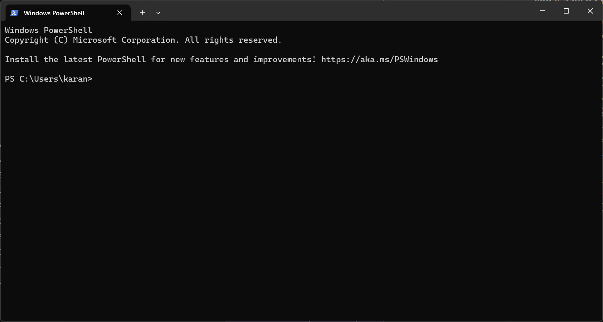
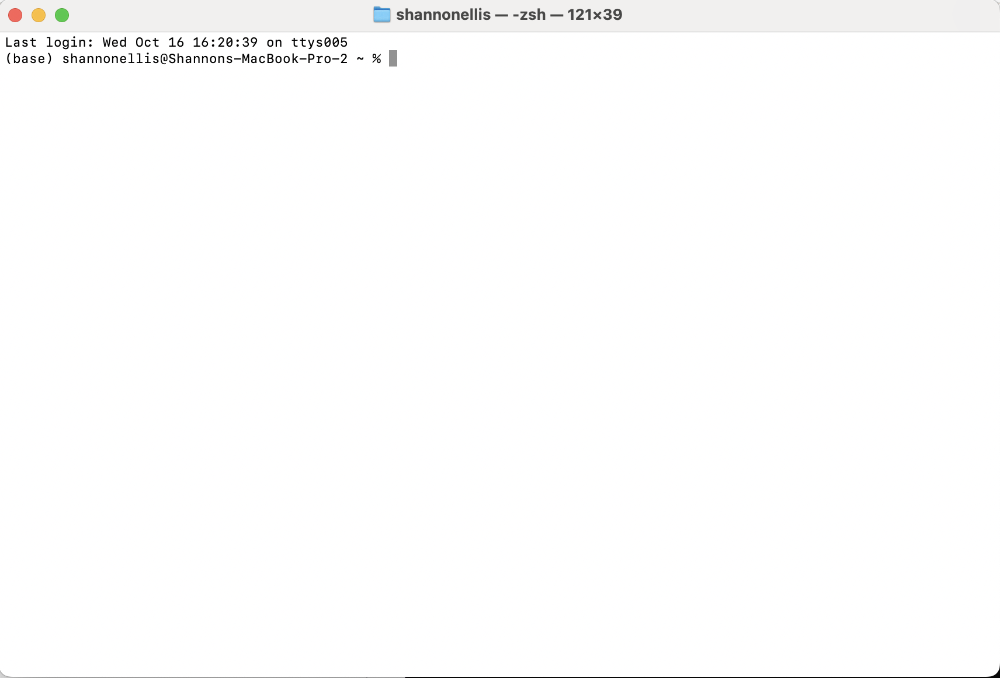
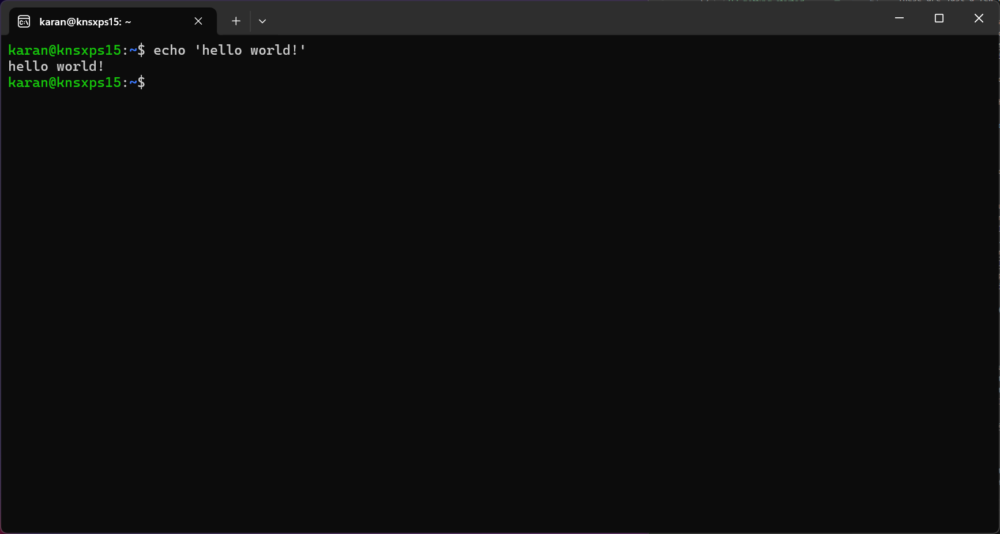
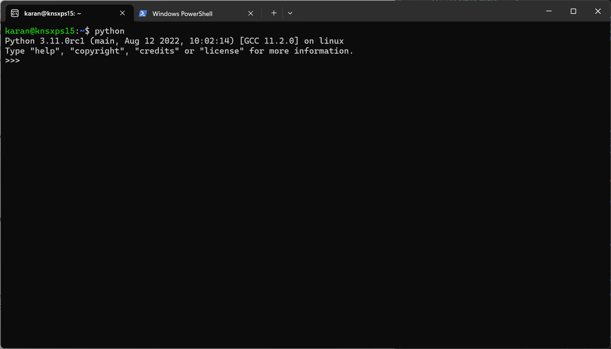

Command Line Basics#
Pre-requisite: You should have finished the installation guide.
What is the command line?#
The command line is a text interface for your computer. It’s a program that takes in commands, which it passes on to the computer’s operating system to run. From the command line, you can navigate through files and folders on your computer, just as you would with Windows Explorer on Windows or Finder on Mac OS. You can also run programs from the command line, which can be much faster than clicking around in a graphical interface.
But why should I learn the command line?#
Well firstly, it looks cool! I mean imagine yourself sitting in middle of a coffee shop with your laptop and you are typing some commands in a black window with green text. It looks like you are hacking into some top secret government server. But that’s not the only reason. Here are some more reasons:
Speed: You can do things much faster using the command line. For example, you can navigate to a folder using a single command, instead of clicking through a series of folders in a graphical interface.
Power: You can do things with the command line that you can’t do with a graphical interface. For example, you can search for files that contain a specific word, or replace all instances of a word in a file.
Scripting: You can write scripts to automate tasks using the command line. For example, you could write a script that backs up all of your files to an external hard drive.
Remote Access: You can use the command line to connect to other computers over a network, and run commands on them. This can be useful for managing servers, or for working on a computer that doesn’t have a graphical interface.
Learning: If you want to learn more about how computers work, the command line is a good place to start. It gives you a better understanding of how the computer’s operating system works, and how programs interact with it.
These are just a few reasons to learn the command line. If you want to get more inspiration, check out this awesome list of Command Line Interface(CLI) applications. A cool one that I found is spotify-tui which provides a spotify client in the terminal!
![insert images of spotify TUI]
Let’s get started with the command line!
Opening the command line#
Windows#
If you are using Windows 10/11, we will be using a tool called Windows Powershell.
Open your start menu (click the windows button) and search for
Powershell. Click on theWindows Powershellapp to open it.Windows Powershell should come preinstalled with all modern versions of windows. If you can’t find it, you can download it from here.
Once you open the app, you should see a black window with white text. This is the command line!

Mac OS#
Open your
Finderand navigate toApplications->Utilities->Terminal. Click on theTerminalapp to open it.You can also use the
Spotlight Searchby pressingCmd + Spaceand typingTerminal.

Linux#
Most Linux distributions come with a terminal pre-installed. You can open it by searching for
Terminalin your application menu.

Basic Commands#
pwd#
pwd stands for Print Working Directory. It shows the current directory that you are in. This is useful when you are not sure where you are in the file system.
Go ahead and in your command line, type pwd and press Enter. You should see the current directory that you are in. This becomes useful when you are navigating through the file system.
ls#
ls stands for List. It lists all the files and folders in the current directory. Go ahead and type ls in your command line and press Enter. You should see a list of files and folders in the current directory.
A fun exercise to understand what your terminal is doing would be to do the following:
open your terminal and get your current working directory by ysing the
pwdcommand.Open your file explorer and navigate to the same directory.
Compare the files and folders listed in the terminal with the ones in the file explorer. You can do this by using the
lscommand in the terminal and visually comparing the files and folders in the file explorer.
The ls command is a very useful command and you will be using it a lot to navigate through the file system.
cd#
cd stands for Change Directory. It is used to navigate through the file system. You can use it to move to a different directory.
To move to a directory, you need to provide the path to the directory. There are two types of paths that you can provide:
Absolute Path: An absolute path is the full path to a directory. For example,
C:\Users\username\Documentsis an absolute path to theDocumentsdirectory in Windows. You can use an absolute path to move to any directory on your computer.Relative Path: A relative path is the path to a directory relative to the current directory. For example, if you are in the
C:\Users\usernamedirectory in Windows, the relative path to theDocumentsdirectory would beDocuments. You can use a relative path to move to directories that are nearby.
To move to a directory, you need to provide the path to the directory. For example, to move to the Documents directory in Windows, you can use the following command:
cd Documents
Go ahead and try it out in your command line. first run the ls command to see the files and folders in the current directory. Then choose a directory and run the cd command to move to that directory. Run the ls command again to see the files and folders in the new directory.
mkdir#
mkdir stands for Make Directory. It is used to create a new directory. You need to provide the name of the directory that you want to create. For example, to create a directory called test, you can use the following command:
mkdir test
Go ahead and try it out in your command line. Run the ls command to see the files and folders in the current directory. Then run the mkdir command to create a new directory. Run the ls command again to see the files and folders in the current directory. You should see the new directory that you created.
touch#
touch is used to create a new file. You need to provide the name of the file that you want to create. For example, to create a file called test.txt, you can use the following command:
touch test.txt
Go ahead and try it out in your command line. Run the ls command to see the files and folders in the current directory. Then run the touch command to create a new file. Run the ls command again to see the files and folders in the current directory. You should see the new file that you created.
rm#
rm stands for Remove. It is used to delete files and directories. You need to provide the name of the file or directory that you want to delete. For example, to delete a file called test.txt, you can use the following command:
rm test.txt
You can now remove/delete a file you’ve created.
rmdir#
rmdir stands for Remove Directory. It is used to delete directories. You need to provide the name of the directory that you want to delete. For example, to delete a directory called test, you can use the following command:
rmdir test
You can now remove/delete a directory you’ve created.
clear#
clear is used to clear the terminal screen. It is useful when the terminal screen is cluttered with a lot of text and you want to start fresh.
Command line for python#
Now that you have learned the basics of the command line, let’s see how you can use it to run python programs.
Opening a python interpreter#
You can open a python interpreter in the command line by typing python and pressing Enter.

Now you can type python commands directly into the command line and see the output. For example, you can type print("Hello, World!") and press Enter to see the output.
You can also use the python interpreter as a calculator. For example, you can type 2 + 2 and press Enter to see the output.
In the next section we will learn how to write and run python programs from the command line.